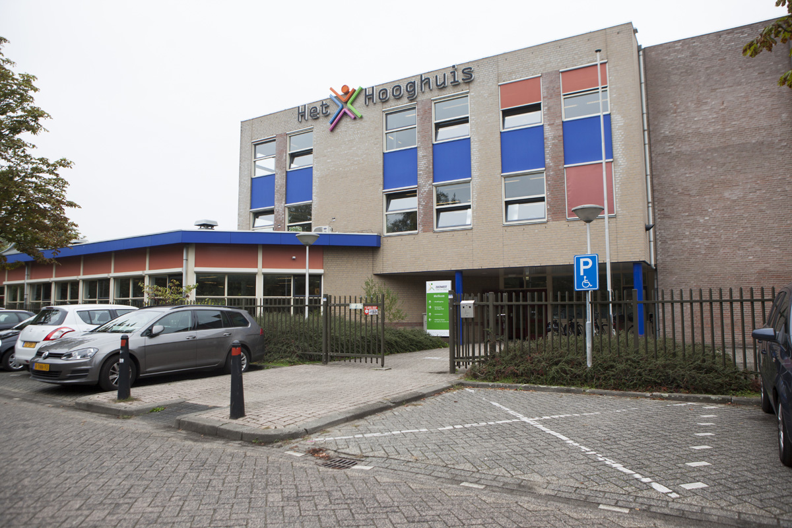
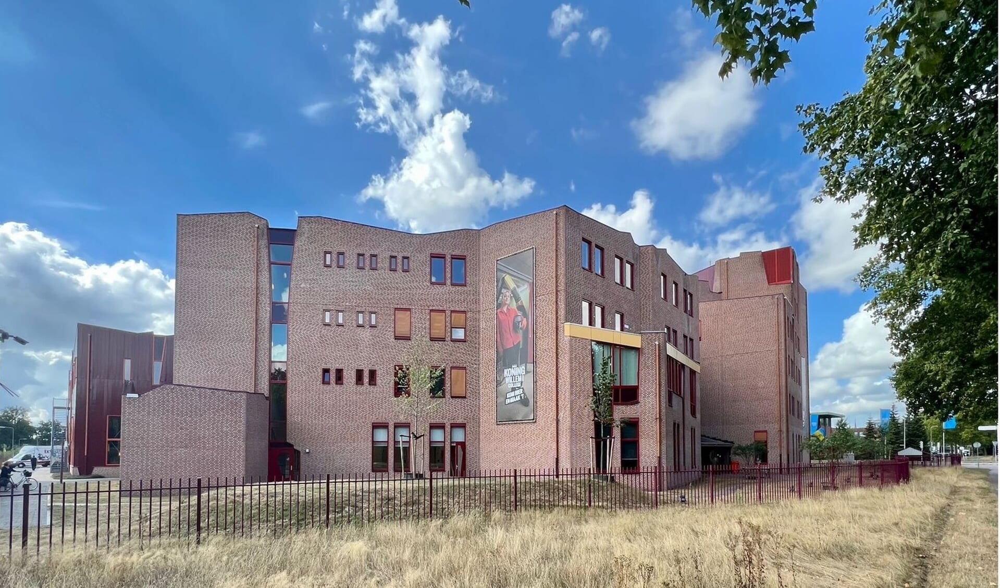
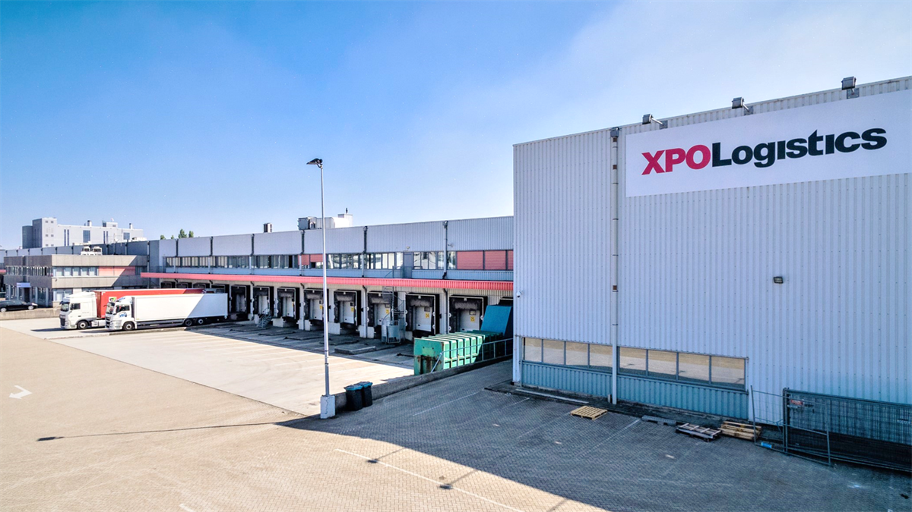

| Ervaringen |
|---|

Gegevens: Ik heb als kind op deze school gezeten, van de kleuterschool tot het einde van de basisschool, waar ik net als in Nederland ook 8 klassen had. De avonturen die ik daar beleefde, zal ik nooit vergeten. |
|

Gegevens: Op school het hooghuis zuid was het de eerste Nederlandse school waar ik mijn eerste woorden/zinnen in het Nederlands leerde en waar ik mijn eerste vrienden in het buitenland maakte. |
|

Gegevens: Op de tweede school van Nederland voelde ik mij meer thuis en stond ik open voor het maken van vrienden. Op deze school heb ik opleiding medewerken ict support afgerond. |

Gegevens: Nu zit ik op school in Hertogenbosch met als hoofdvak softwareontwikkeling en tot nu toe is het pas het eerste jaar, maar ik vind het erg leuk. |
|

Gegevens: Ik werk bij gxo, toen ik begon was xpo, sinds het begin toen ik 18 werd. Dit is tot nu toe mijn eerste bijbaan in mijn leven.Ik spreek daar ook Nederland en ik denk dat is wel goed voor mij. Op deze moment kan ik bijna alle functies uitvoeren die er zijn. |